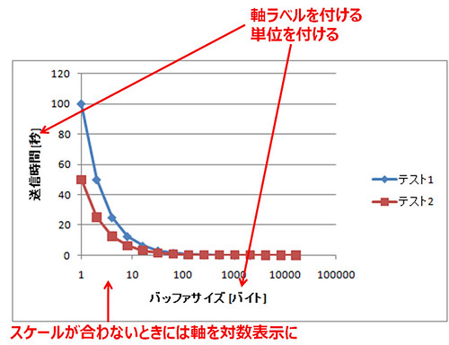

第二部レポート
Contents
第二部レポート¶
レポートに関して¶
第二部の内容を整理してレポートを提出します．
トップページに記載の通り，レポートは初版提出と最終版提出に分かれており，初版提出後にピアレビューを行い，改善した上で最終版を提出します．
注意: 予めレポートの初版提出の期日を設定していますが，その直前の回が終了してからレポートを作成し始めてピアレビューに間に合うように初版を完成できるという意味ではまったくありません．
毎回の実験の中でレポートの材料を整理し作成してきたことを前提とし，最終的に全体の論旨や整合性を確認し，不足している情報については再実験を行うなどの対応に時間が必要だと思われるので設定しているということです（そのための時間を明示的に設定しているのは第一部のみ．第二部以降は自身でレポート執筆の計画を立てて取り組むことになります）．
第二部のレポートは，以下のテンプレートを参考に作成し，各自が実施した部分が分かるようにしてまとめてください．
第二部のレポートテンプレート¶
レポート提出方法（初版提出）¶
第二部も個人でレポートを作成して提出します．
実験の各回の内容についてまとめたデータを学務情報システム（LiveCampus）に提出して下さい．
以下のテンプレートを参考に作成し，表紙の記述を「初版」として下さい．
「最終版提出時個別レビュー」に関する記載は初版提出時は削除してください．
レポートの提出先は Live Campus のレポート提出フォルダです．
提出するレポートの形式は以下のファル名のZIPアーカイブとします．
例えば，A1グループの学籍番号7061-1234の人は初版レポートを以下のファイル名で提出してください．
CS実験I_Part2_A1_7061-1234初版.zip
提出するアーカイブファイルには以下のデータを格納してください．
MS Word形式の初版のレポートファイル（CS実験I_Part2_A1_7061-1234初版.docx）
レポートデータ（レポート作成にあたって利用した図表，ソースコードなどの元データ）
レポート提出方法（最終版提出）¶
ピアレビュー時のレポート（履歴やコメント残したもの）と，ピアレビューを受けて改善した最終版（コメント等全て削除したもの）のレポートを提出してください．
最終版は初版からのレポート改善の他に以下を追加して下さい．
各自で行ったピアレビューの活動に対する考察のページを最後に追加してください．
表紙の記述を「最終版」としてください．
提出レポートに対する個別のレビューを希望する場合は「最終版提出時個別レビュー」を「希望する」にしてください．そうでない場合は「希望しない」にしてください（評価に影響しません）．
レポートの提出先は Live Campus のレポート提出フォルダです．
提出するレポートの形式は以下のファル名のZIPアーカイブとします.
例えば，A1グループの学籍番号7061-1234の人は以下のファイル名で提出してください．
CS実験I_Part2_A1_7061-1234最終版.zip
提出するアーカイブファイルには以下のデータを格納してください．
MS Word形式の最終版のレポートファイル（CS実験I_Part2_A1_7061-1234最終版.docx）
MS Word形式のピアレビュー版のレポートファイル（CS実験I_Part2_A1_7061-1234ピアレビュー版.docx）
レポートデータ（レポート作成にあたって利用した図表，ソースコードなどの元データ）
レポート提出方法（期限に間に合わなかった場合）¶
期限に間に合わなかった場合も，Teamsから提出するようにしてください．
期限後に提出物の誤りを見つけて再提出したい場合は，ファイル名の最後に「(2回目)」というように分かるよう記載して提出すること
レポートの書き方¶
レポートでは課題ごとに実験の目的，実験環境，実験結果，「結果に基づく考察」を記載してください．
結果が想像していた結果と異なっていたとしても，その結果になったという事実に変わりはありません．
なぜ，そのような結果になったのか，その結果は有効なのかそうでないのか，などなど考えて察して書く内容は多岐に渡ります．
想像していた結果と異なっていたとしても，その結果に対する深い考察をしてください．
「実験計画法」や「統計解析」についても意識していけると今後の将来に役立つと思います．
そのため，レポートには実験を再現するために必要な情報を正確に記述しておく必要があります．
想像していた結果と異なる結果が得られたとしても，その結果を第三者が再現できるための記載が必要です．
限られた時間でレポートをまとめ上げてください．
また，グループで分担して実験を行ったり，相談をしたりすることは推奨しますが，レポートをまとめるにあたっては，あくまで各自でしっかり理解して各自の言葉で工夫して記述してください（必要に応じて参照情報など追記したりしてくれて構いません．その方が勉強していることが伝わるかもしれません）．．
以下は，単なる例です．必要に応じて読み手が読みやすいように項目名を変更したりフォントや背景色を変更したり，章節を増やして構いません．
1. はじめに
* 第二部の目的
* 目的達成のために立てた戦略
* 第二部で実施したことのハイライト，などを記述してください．本章を読めば，このレポートに記されたポイントや完成度
など分かることが理想的です．
2. 複数クライアント対応（必須）
2.1 様々な実装方法
2.1.1 select()での実装について，fork()，pthreadでの実装との違いが分かるよう簡潔明瞭かつ論理的にまとめてください．
2.1.2 fork()での実装について，pthread，select()での実装との違いが分かるよう簡潔明瞭かつ論理的にまとめてください．
2.1.3 pthreadでの実装について，fork()，selectでの実装との違いが分かるよう簡潔明瞭かつ論理的にまとめてください．
2.1.4 Apacheでの実装について，バージョンやパラメータ（デフォルト設定かと思いますが）など記述してください．
2.1.5 独自方式での実装について，読み手が実装を再現できるような情報を全て記述してください．
2.2 HTTPベンチマークプログラムの機能拡張
どのような機能拡張をどのように実装したのか記述してください．
2.3 性能比較
各実装方式での性能比較を行い，図表を用いて計測結果をグラフ化するとともに，そのような結果になった理由を考察してく
ださい．もちろん実験を行う前に，班員間でどのような実験結果になるのか十分議論し予想内容を整理してから性能比較実験
を行ってください．
3. セキュリティホール（発展）
3.1 バッファオーバフロー
バッファオーバフローとは何か，Simple HTTPサーバをバッファオーバーフローさせるためのコード，バッファオーバフロー
している状況について記述してください．
バッファオーバフローしないようにするためのSimple HTTPサーバへの変更部分について記述してください．
3.2 バッファオーバランで任意のコマンドを実行
バッファオーバフロー対策をしていないSimple HTTPサーバに対し，バッファオーバランを利用してコマンドを実行するため
の攻撃コードと，実際に攻撃が成功している様子を記述してください．DEPやASLRなどセキュリティ機能を無効にした場合，
どのように無効にしたか読み手が再現できる条件を明確に記載してください．
3.3 バッファオーバランでリモートからシェルに接続
バッファオーバランを利用してSimple HTTPサーバでシェルに接続するための攻撃コードと，実際に攻撃が成功している様子
を記述してください．
4. HTTPサーバ機能拡張（選択）
4.1 設計
どのような機能拡張をSimple HTTPサーバのどの関数の部分に実現するのか，Simple HTTPサーバの関数では足りない場合は
どの部分にどのような関数を追加するのかなど全体像について記述してください．
4.2 実装
具体的にそれぞれの機能拡張をどのように実装したかを機能拡張毎に書いてください．複数の機能拡張をまとめて実装した
場合(例えば4XX系のステータスコードと認証など)は，一緒に記述して構いません．ただし読み手が気付くよう工夫して記述
してください．
4.3 動作検証
上記の機能拡張が意図した通りに動作し，実装に不備がないことを示す証拠となるスクリーンショット（例えばFirebugで
のキャプチャなど）を載せてください．
4.4 性能評価
上記の機能拡張が意図した通りに動作し，実装に不部がないことを示す証拠となるグラフ等を記述してください．例えば
Keep-AliveやHTTP/2のどの仕様を実装したことで，ベンチマーク結果が速くなっているのがなど示せるとよいと思います．
5. 関連技術
ここを書くのは必須ではありませんが，レポート作成の過程で調べた書籍やホームページURLなど適宜アピールしてください．
6. おわりに
* 目的達成に向けた取り組みの結果と今後の課題 (未実装部分や今後の関心毎など)
* 第二部内容についての感想，など
参考文献や以下のサイトなども参考に，体裁の整った良いレポートを作成してください．
レポートの書き方 (学内ONLY, written by Professor Shiomi!!)
ツール紹介¶
レポートを作成する際に便利なツールを紹介します．このツールを利用することが必須ではありません．むしろ，自分の方法にあったツールを自分で探す（探す方法を確立する）方がより重要です．
TeX¶
LaTeX
例えば，TeXworksは，TeXでドキュメントを作成するためのシンプルな統合環境です．macOS用の優れた統合環境であるTeXShopをモデルに，同様の環境を全てのシステム上で実現すべく開発されています．
図・グラフなどの作成（TeXの場合）¶
図・グラフなどは各自が選んだソフトウェアで作成してください．ただし，TeXに取り込む場合には eps 形式に変換する必要があります（他の形式（例えば画像形式やPDF形式）でも不可能ではないです）．
シーケンス図などのUMLの図の作成¶
シーケンス図などのUMLで定義された図を作成する場合は，IllustratorやPowerPointなどのドローソフトで作成しても良いですが，モデリングツールを利用しても良いでしょう．
ネットワーク構成図の作成¶
IllustratorやPowerPointなどのドローソフトとルータ等の機材のフリー画像（PowerPointの場合は「挿入→ネットワーク画像」から “ネットワーク機器” などのキーワードで検索（クリエイティブ・コモンズライセンスに限定））を使って作成しても良いですが，ネットワーク構成図を作成する機能を持つアプリケーションを使っても良いでしょう．
-
MS Visioに同梱されているネットワーク関係のステンシルでも十分ですが，特定メーカの機器のステンシルを使いたい場合はここからダウンロード
-
新規に作成するダイアグラムの種類から Network Diagramを作成
blockdiag - simple diagram images generator
テキストベースでグラフを作成するツール．ネットワーク構成図を作るにはnwdiagを用いると良いです．
スクリーンショットの撮り方¶
画面のスクリーンショットを撮る場合はOS標準の方法と専用のアプリケーションを導入する方法があります．機能に多少の違いがありますので，必要なスクリーンショットに合わせて使い分けてください．
Windows標準の方法
専用アプリケーションの例
PDFの作成¶
MS Officeの場合
直接PDFファイルをエクスポート可能です．
参考: PDF に保存または変換する
TeXの場合
DVI形式のファイルに対して dvipdfmx コマンドを使ってPDFに変換します．
提出前のチェックリスト¶
構成¶
使用機材は明記しているか？
最低限，読んだ人が実験を再現できるだけの情報が必要です．
書式¶
指定したフォーマットを使用しているか？
学会，会社，行政文書など，すべてに規定されたフォーマットがあります．
すべての図と表にキャプションがついているか？
すべての図と表は本文中で引用されているか？
すべての図と表は本文中で引用されている箇所が明確か？
読者が意図通りの箇所を参照できるような本文中の表現，図・表の表現が必要です．特に図・表に含まれる情報量が過剰な場合，読者は混乱します．本文の論旨に必要な箇所を本文中の図・表とし，全体の情報は付録で提示するなどの工夫を検討してください．
図・表のキャプションの書式は適正か？
図のキャプションは図の下側に配置
表のキャプションは表の上側に配置
すべての参考文献は本文中で引用されているか？
フォントの種類やサイズが統一されているか？
文書全体で1つのフォントに統一する必要はありませんが，第1章の見出しはボールド体，第2章の見出しは明朝体などといった不整合は許容されません．
句読点は統一されているか？ (、。もしくは，．のいずれかに統一すること)
半角のカンマ・ピリオド(, . )を使う場合には直後にスペースが必要です．
文体¶
箇条書きを必要以上に多用していないか？
こそあど言葉(これ，それ，このなど)を多用していないか？
読者が参照先に迷うため，極力こそあど言葉は避けてください．
具体的な名詞を使って代替することができるはずです．
接続詞(そのため，しかしなど)を必要以上に多用していないか？
接続詞を多用しなければならないときは文章の構成がおかしい場合が多いです．
一般的には接続詞は続く文章を強調したい場合に使います．
必要以上に1文が長くなっていないか？
「～し，」という表現を多用していないか？
「～し，」という言葉を使うと一見文章がつながってみますが，実は論理的につながっていない場合が多いです．
「～し，」という表現を使いそうになったら，2つの文章に分けることができないか考えてみてください．
グラフ¶
適切なグラフの種類を選択しているか？
用途に応じてグラフの種類が存在します．例えば，折れ線グラフと散布図は見かけ上類似点がありますが，利用目的が異なります．折れ線グラフは1つのものごとの移り変わりを表現する場合（典型的には時系列データ），散布図は2つの数値データの関係を表現する場合に採用します．これ以外のグラフについても，用途に合わせて適切なグラフの種類を選択してください．
軸ラベルが用意されているか？
軸ラベルには単位が記載されているか？
グラフ中の値を読むことができるサイズ・品質か？
対数表示の利用も選択肢のひとつです．
MS Excelの場合は軸の書式設定で「対数目盛を表示する」をチェックします．
